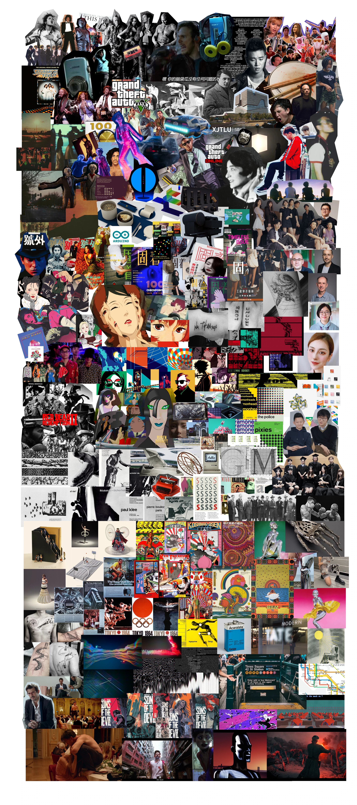

Global Curiosity
Global Curiosity 是一个通过视觉拼贴梳理个人成长经历与创作影响的项目，探索我的兴趣、审美与设计方向是如何形成的。我从中学到大学毕业后的经历出发，借助思维导图和时间线，整理音乐、电影、游戏、艺术与设计作品，以及学习经历和身边的人对我的影响，并将素材组织为个人兴趣、教育与设计影响、他人的帮助与支持三条线索。通过图像的重叠、并置与穿插，我把不同阶段的经历及其联系呈现在同一画面中，让观众能够沿着线索阅读这段成长过程。结合反馈调整构图、色彩和比例后，项目最终完成了数字拼贴与手工剪贴的实体作品，呈现我逐渐走向平面设计的个人路径。

